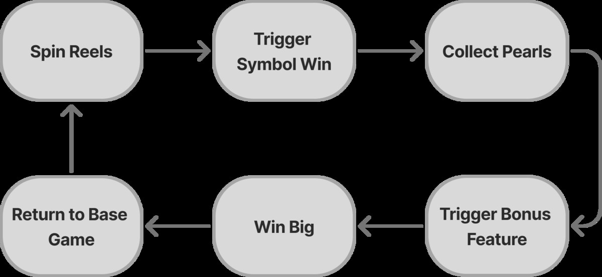
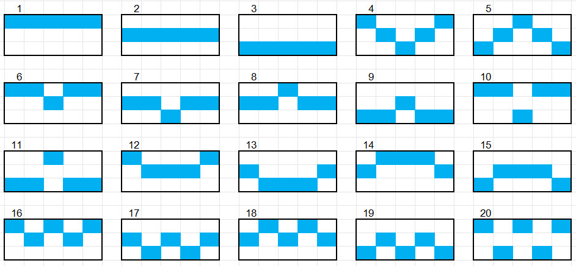
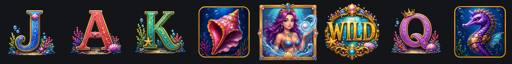

Pearl of Fortune
Collect pearls, fill a reel, trigger the feature.
Concept
A portrait 5×3 video slot for 43-inch cabinets built around collectors. Each of the five reels carries a collector that holds three pearls; filling one launches its feature: Lucky Wheel, Wild Respin (left or right), Free Spins or Pick Bonus. Mermaid's Blessing can fire at random, and four jackpots (Mini 50×, Minor 100×, Major 250×, Grand 500×) sit above the reels.
My role
Principal designer from theme and feature ideation through the GDD, flowcharts, UI wireframes and a playable HTML5 prototype (800×1600) used to test the collector loop and pacing of the features.
Prototype screens
Captured from the HTML5 prototype. It is built to test the feature loop, not to be a finished product.


Design documentation
Documentation set: GDD, flowcharts, paytable and a pitch deck. The prototype above is the playable proof.




Screens, flows and layout